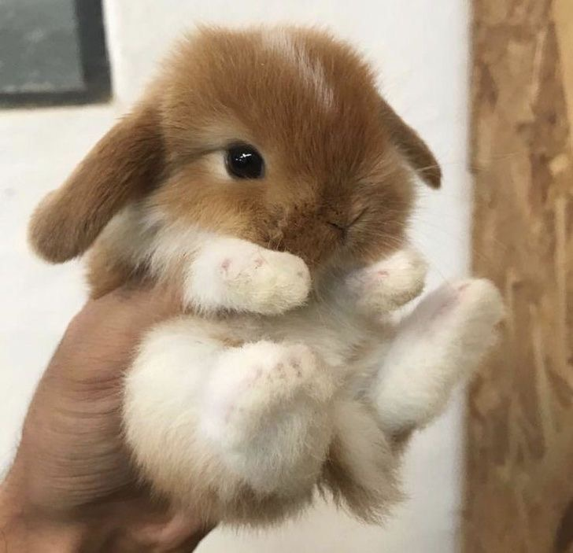

Puput ovat monen kodin suosikki lemmikki
Pupun eli kanin tunnetuin piirre on sen pitkät korvat, jotka auttavat
sitä havaitsemaan vaaroja.
Ne ovat kasvinsyöjiä ja syövät esimerkiksi heinää, vihanneksia ja
yrttejä
Puput ovat syötävän suloisia

Miksi ottaa pupu lemmikiksi?
- Söpöys
- Rauhallinen lemmikki
- Sosiaallisuus